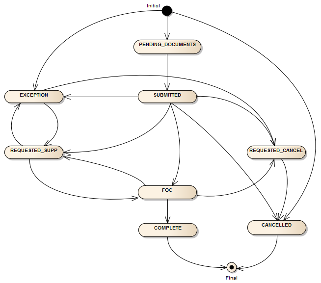

Porting-in Phone Numbers
Overview
- About Porting
- Overview of the Port-in Process
- Checking LNP Availability
- Creating an LNP Order
- LOA Upload
- Modifying an LNP Order (Supp LNP Order)
- Canceling LNP Order
- Activating Ported Numbers
About Porting
The Bandwidth Phone Number Dashboard provides an API that can be used to submit Port-In requests. These requests to move phone numbers from a "losing carrier" to Bandwidth are part of the Local Number Portability (LNP) process. These LNP requests are automatically validated and processed. If the order fails during processing, it will be held for exception processing. Customers can catch and fix exceptions 2 different ways:
- The customer's application can check the status of port-in orders, and re-submit or cancel them through the API.
- The customer's LNP team can check the status of port-in orders, and re-submit or cancel them through the Bandwidth Dashboard UI
Overview of the Port-in Process
The external events in the porting process are documented in the diagram below.
NOTE: Exceptions are outlined as synchronous and asynchronous in the Appendix A: LNP Exception Codes.
The Orders that are managed by the Bandwidth Phone Number Dashboard to implement the above workflow are reported in the order records that are reported through the API calls below. These “order states” comply with the state transitions captured in the following diagram:

Checking LNP Availability
A number or numbers can be checked to see if they can be ported into the Bandwidth Network using an LNPChecker API call.
The fullcheck query parameter values control the components of the response payload that is returned:
fullcheck Query Parameter Behvaior
| Parameter value | Description |
|---|---|
false (default) |
Return only rate center information |
true |
Additional information will be provided on the losing carriers associated with the listed numbers |
onnetportability |
Provides rate center and losing carrier information for onnet tiers only |
offnetportabilty |
In addition to on-net information return off-net port information in <PartnerSupportedRateCenters> element with Partner/Vendor that the port will be supported on. Contains a list of the TNs that are supported in partner rate centers, and for which we will manually execute a port if requested for help. |
Response Description
| Element | Description |
|---|---|
-SupportedRateCenters - PartnerSupportedRateCenters - UnsupportedRateCenters |
Rate Center information for the indicated set of ratecenters, containing City, State, LATA and the list of TNs for which that Rate Center applies. The Tier information is provided for offnet rate centers. |
-SupportedLosingCarriers - UnsupportedLosingCarriers |
Details on the Losing Carrier including name, SPID, whether or not the carrier is a wireless carrier, whether or not account number is required as part of the CSR check, and the anticipated minimum number of days before a FoC date will be granted. |
Creating an LNP Order
The API allows a user to create a new LNP order. An order number will be auto-generated and provided to the customer. The order must pass synchronous and asynchronous validation. Synchronous validation will return validation failures immediately in the response. If synchronous validation passes, but asynchronous validation fails, the customer will not receive the error response until they check the order status.
As in other asynchronous workflows, the request to port in a number is created by a POST to a resource dedicated to the purpose to tracking requests – the accounts/{accountId}/portins resource
LOA Upload
After successfully submitting the Create LNP Order request, an LOA may be uploaded using our LOA API.
Supported File Types
The following MIME types are supported for the LOA upload file:
- PDF(“application/pdf”)
- PLAIN(“text/plain”)
- JPG(“image/jpeg”)
- TIFF(“image/tiff”)
- CSV(“text/csv”)
- XML(“application/xml”)
- WAV(“audio/x-wav”)
- ZIP(“application/zip”)
CURL Example
Use the order-id returned in the Create LNP Order response.
curl -H 'Content-Type: <MIME Type>' --data-binary "@<Filename>" –iv <Base URL>/portins/<order-id>/loas
Example:
curl -H 'Content-Type: application/pdf' --data-binary "@Test_LOA.pdf" -iv <BASE URL>/portins/<order-id>/loas
File Meta-Data
It is often useful to attach additional data to an order in the form of an attached file, and so the existing LOA capability has been extended to optionally allow different file information to be included with a file, to describe type and purpose information. The Meta-Data associated with a file includes a file document name and a document type, which is one of:
- LOA
- INVOICE
- CSR
- OTHER
Modifying an LNP Order (Supp LNP Order)
The API allows a user to modify an existing LNP order. The order number that was generated in the create LNP order request must be provided. Modifications are only allowed for orders that are not yet complete or cancelled. After the FOC date has been received, the billing telephone number and subscriber information cannot be modified, only the FOC date/time can be updated.
Canceling LNP Order
The API allows a user to cancel an existing LNP order. The order number that was generated in the create request must be provided. The status of the order shall not be marked as COMPLETE i.e. you cannot cancel a completed order. The DEL method is used for this purpose.
Activating Ported Numbers
The by default the Bandwidth Phone Number Dashboard will activate ported wireline numbers shortly after 11:30 am on the FOC date.
The Bandwidth Phone Number Dashboard will also support customer “on demand” activation of numbers on the FOC date, if the intent to use the “on demand” activation is declared when the Port Order is created. This declaration is done by including a <Triggered> element in the /portin order request.
If on demand activation is indicated, then the customer will specify a default activation time in the initial port request, and can request activation of the port at any time up until that default activation time. If a port has not been activated by the default activation time, the Bandwidth Phone Number Dashboard will activate the port.
If activation by the default activation time on the FOC date is not achievable it is possible to delay activation for up to the third day after the FOC date, acknowledging that the losing carrier may have removed service from TN on the FOC date.
Activation and management of on-demand ports is done via the activationStatus resource. The activationStatus resource is created by the system when activation is available for the port request, and can be modified by PUT to activate the port, or to delay the activation in the case that the manual activation cannot be completed on time.
Payload Parameters
| Parameter | Required | Type | Description |
|---|---|---|---|
AutoActivationDate |
Yes | Date | This date controls both the activation of the Port, and delays in activation of the port. - If AutoActivationDate is in the past, then the port will be activated - If AutoActivationDate is in the future then the port will be delayed until the specified time, as long as that new time does not validate other restrictions on the activation of the port. The typical guard time applied to this capability is 3 business days. |